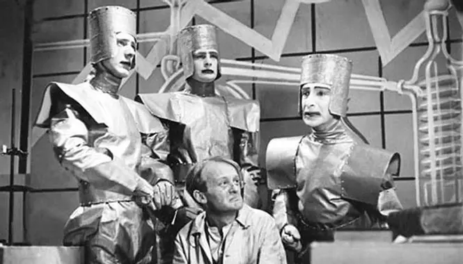
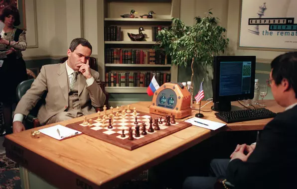

L'idée d'intelligence artificielle apparait tout d'abord dans le domaine de la science fiction.
En 1921 la pièce de théâtre "Rossoms Universal Robots" mettait en scène des machines intelligentes.

il faudra attendre 1950 pour que les scientifiques commencent à s'intéresser au sujet.
Le mathématicien britanique Alan turing publie la même année l'article "Machines de calculs et intelligence", oû il
se demande comment savoir si une machine se rapproche d'une intelligence humaine.
Ce procédé est aujourd'hui appelé "Test de Turing".
L'essor de l'intelligence artificielle commence en 1956, en même temps que les débuts de l'informatique.
Le premier logiciel d'IA est créée par deux chercheurs américains : Allan Newell et Herbert Simon;
Ce logiciel, "Logic Theorist" est capable de réaliser tout seul des démonstrations de théorèmes mathématiques.
En 1997, l'IA "Deep Blue" bat le champion du monde d'échec, Garry Kasparov. Elle était capable d'évaluer jusqu'à 200 millions
de positions possibles par seconde.
